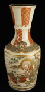

|  | 作品名稱 | 降龍伏虎羅漢薩摩花瓶一對 The Arhats who Tame Dragons and Subdue Tigers: A Pair of Satsuma Vases |
| 作者 | 這裡是第二個欄位第一行 | |
| 年代 | 江戶後期 1800s (Edo period) | |
| 尺寸 | 12×12×30 cm/單件each | |
| 作品說明 | 瓶口至肩部以龜甲木瓜紋點綴，厚塗釉色顆粒明顯。 瓶身分別繪有降龍伏虎羅漢、文彥博灌水取球與司馬光砸缸的情節，彩繪後以金泥細筆勾勒，人物神情鮮明、動作流暢，飽滿立體感令人驚艷。 可以看出日本色繪陶瓷的題材受到中國影響，成為東洋陶瓷的一大特色。 |